Appendix: Sokrates Explorer
To support explorative mode, I have built as a part of Sokrates tools the Explorer a tool with a graphical user interface that consists of a configuration editor, code preview panels, and several additional features that facilitate free explorations fo code. Explorer centralizes configuration, running of commands, and preview of analysis results in one tool. With Explorer, you can almost instantly see how a change in a setting, e.g., adding a new rule for detecting test files, impacts the analysis results.
See a 5 minutes video on using Sokrates Explorer to analyze source code of JUnit4:
Main Panel
Explorer’s main panel includes a configuration editor, scopes browsers, file preview and console. The configuration editor is a Ace.js JSON editor with standard code editor features code formatting, syntax highlighting, code folding features, search and replace features. A file preview panel shows files in a read only mode.
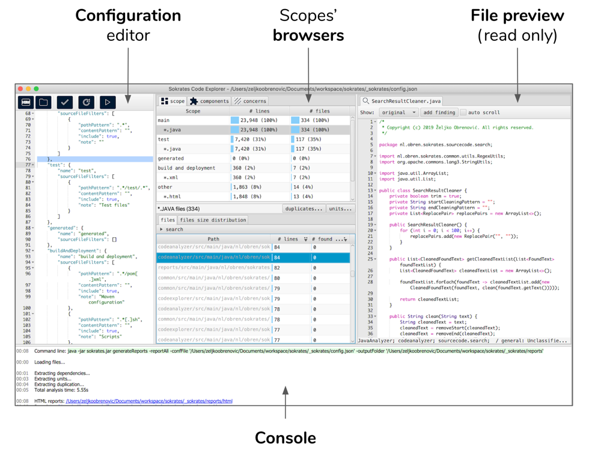 Figure 1: Explorer’s main panel includes a configuration editor, scopes browsers, file preview and console.
Toolbar
The toolbar located above the configuration editor offers shortcuts to frequently used commands:
- creating a new project
- opening an existing project (you need to select a Sokrates configuration file)
- the updateConfig command
- reload browsers and file preview panels after you change the configuration in the editor
- the generateReports command
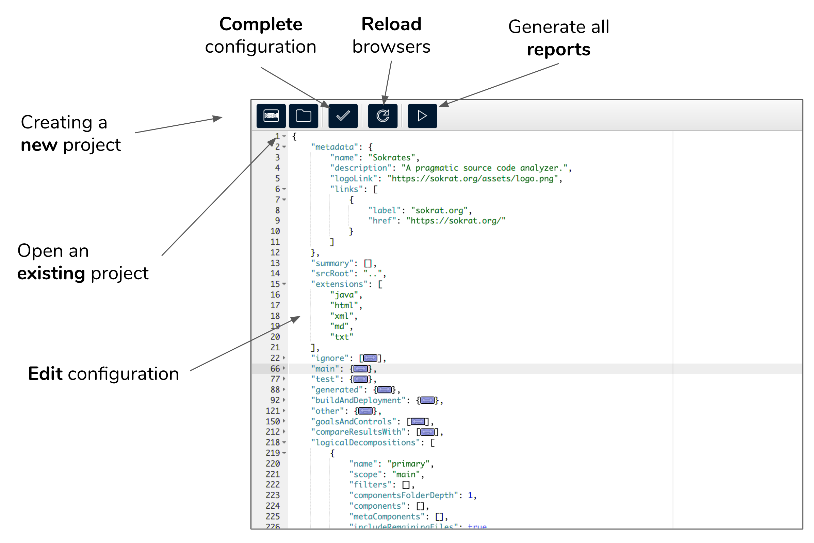
Figure 2: The toolbar located above the configuration editor offers shortcuts to frequently used commands.
Browsing and Previewing
With scope browsers, you can select a scope of interest, get a sorted list of all files in the scope, and preview the content of files.
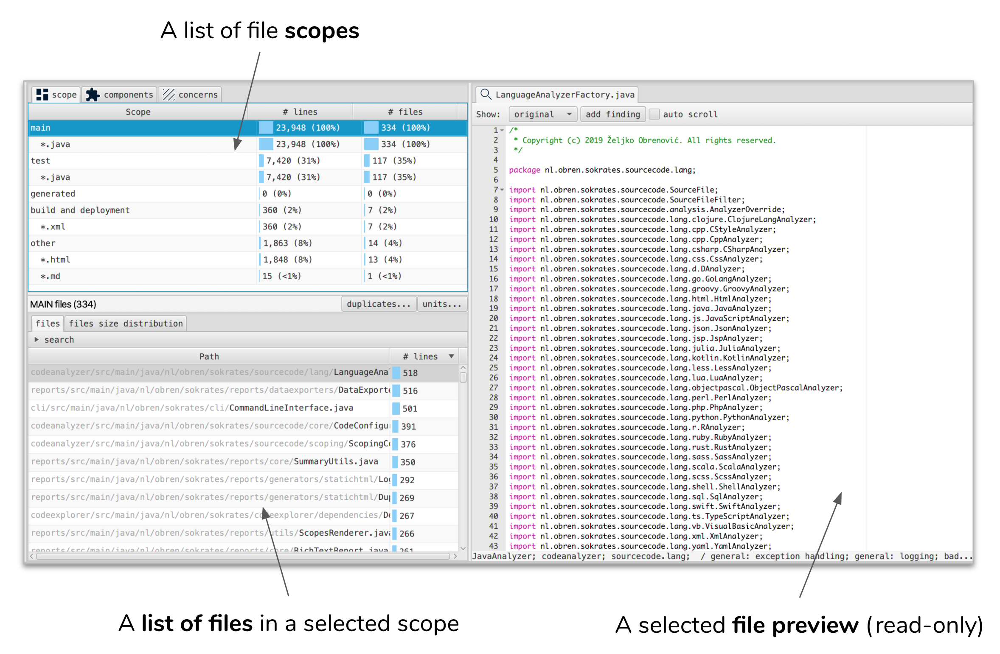
Figure 3: With scope browsers, you can select a scope of interest, get a sorted list of all files in the scope, and preview the content of files.
Scope browsers offer three types of scopes: extensions, logical components, and concerns.
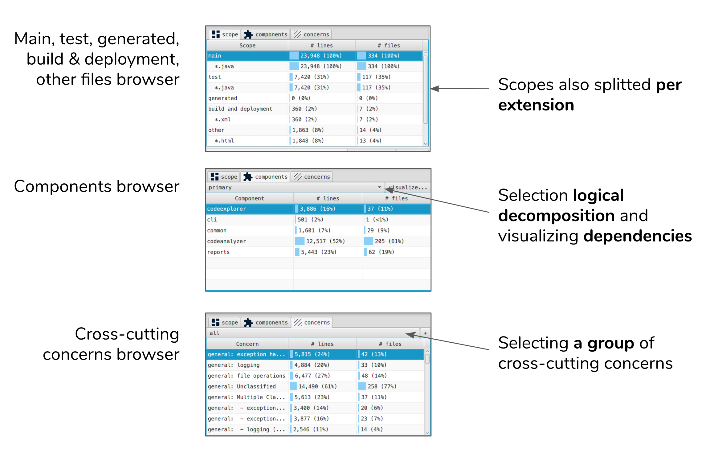
Figure 4: Scope browsers offer three types of scopes: extensions, logical components, and concerns.
Creating New Projects
A new project dialog facilitates creation of new Sokrates projects. To create a new Sokrates project, you need to select the source code root, and extension that you want to include in analyses.
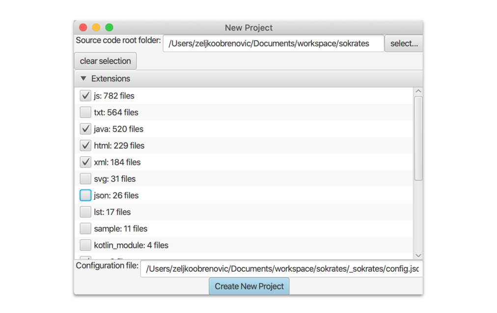
Figure 5: A new project dialog. To create a new Sokrates project, you need to select the source code root, and extension that you want to include in analyses.
Text Search
When browsing scopes, you can do a full text regex-based searches. Explorer will then display the number of hits per file, and in a in a file prview the lines that match your query.
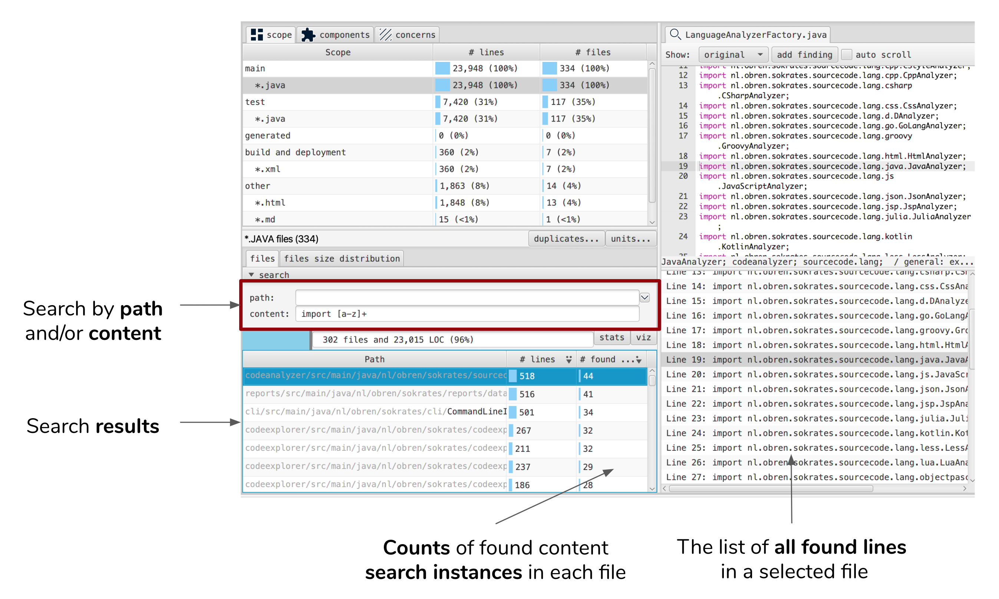
Figure 6: When browsing scopes, you can do a full text regex-based searches. Explorer will then display the number of hits per file, and in a in a file prview the lines that match your query.
Explorer can also show you basic statistic about your search, such as a number of found regex pattern instances.
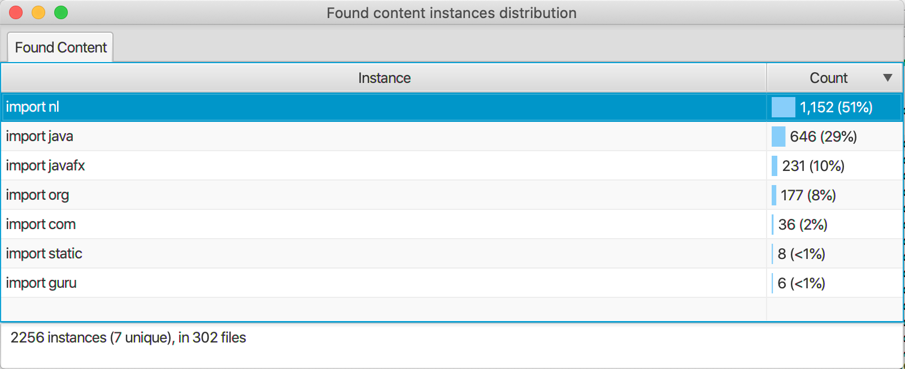
Figure 7: Explorer can also show you basic statistic about your search, such as a number of found regex pattern instances.
With explorer you can also visualize found text instances as dependencies. Explorer can display a link between a component in which the text instance is found and that instance (as a target components). Optionally, you can also clean and transfrom the found text before the visualization.
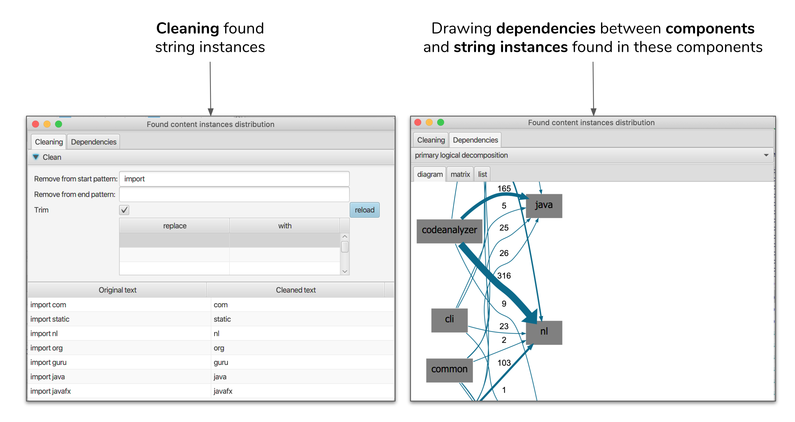
Figure 8: With explorer you can also visualize found text instances as dependencies. Explorer can display a link between a component in which the text instance is found and that instance (as a target components). Optionally, you can also clean and transfrom the found text before the visualization.
Duplication Exploration
When browsing scopes, you can get an overview of duplication within this scope. The duplication dialog shows you the overall duplication level, as well as all duplicates, which you explore and preview.
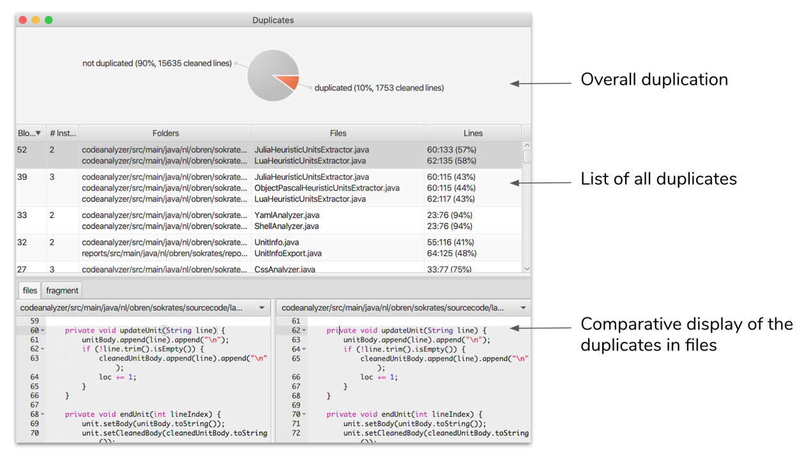
Figure 9: When browsing scopes, you can get an overview of duplication within this scope. The duplication dialog shows you the overall duplication level, as well as all duplicates, which you explore and preview.
Units Exploration
When browsing scopes, you can get an overview of units within this scope. The units dialog shows you the overall unit size and conditional complexity distribution, as well as all units, which you explore and preview.
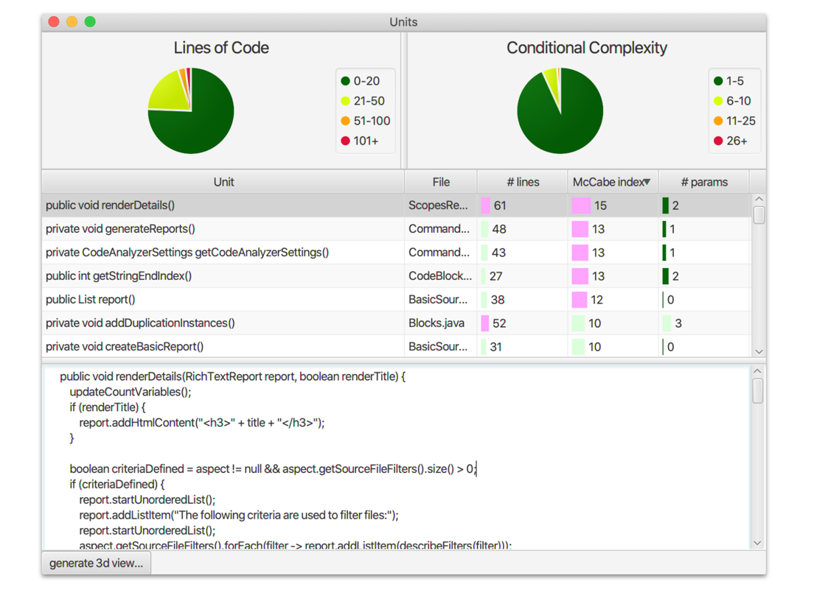
Figure 10: When browsing scopes, you can get an overview of units within this scope. The units dialog shows you the overall unit size and conditional complexity distribution, as well as all units, which you explore and preview.
Adding Manual Findings
When previewing a file, you can select any piece of code, and add it to the list of manula findings. These findings are stored in _sokrates/findings/findings.txt. Sokrates also generates a reports based on these findings.
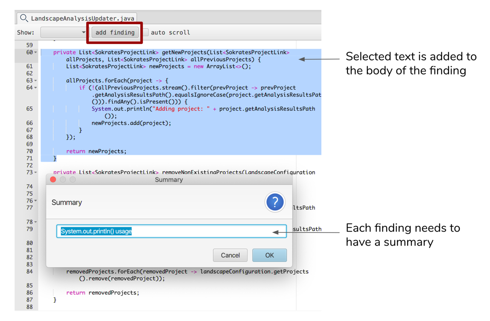
Figure 11: When previewing a file, you can select any piece of code, and add it to the list of manula findings. These findings are stored in _sokrates/findings/findings.txt. Sokrates also generates a reports based on these findings.
Auto Scroll
When previewing a file, you can switch on the auto-scroll mode. In this mode, every file you open will automatically scroll down until the end (simulating a repetitive page down key press). You can configure the speed of scrolling via the pause between each scroll step. 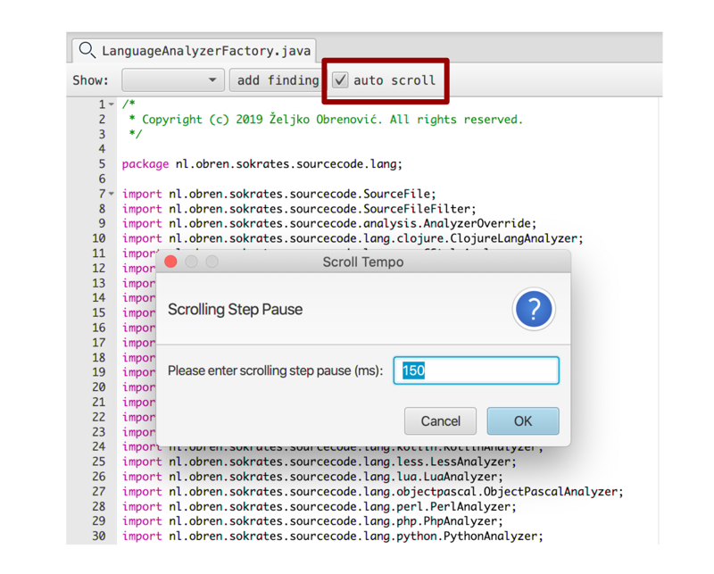
Figure 12: When previewing a file, you can switch on the auto-scroll mode. In this mode, every file you open will automatically scroll down until the end (simulating a repetitive page down key press). You can configure the speed of scrolling via the pause between each scroll step.
Other Features
You can export to the clipboard data from any table in Explorer.
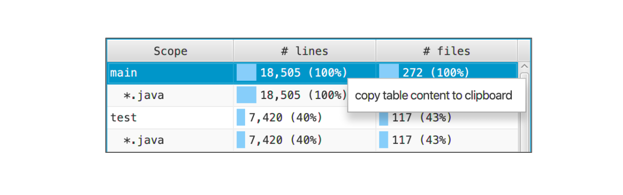
Figure 13: You can export to the clipboard data from any table in Explorer.